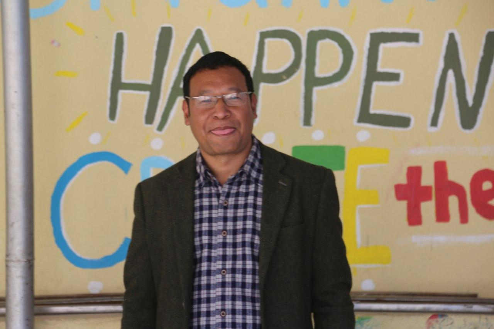
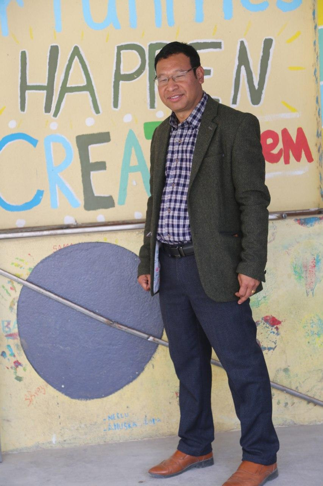

INTRODUCTION
Hello, I am Dil Bahadur Budhathoki originally from Gandaki Province, Baglung District, Galkot Municipality ward no. 8, Kandebas. Now staying at dhobighat-4, Lalitpur Metropolitan city, Bagmati Province. I was educated in my own hometown school, Jana Jagriti Secondary School and also went to study to an Indian Army school near Siliguri, Darjeeling district for two years only. After completing my secondary school education, I was a science student in Patan Campus in proficiency level (+2), then as a Humanities faculty from Bachelors level, I completed my Master’s Degree from TU in 2057 BS. Besides, I did my Bed from Mahendra Sanskrit University and I did my Masters in Philosophy from Singhania University, Rjasthan, India; in 2011 AD. I have been teaching formally from 2057 after I completed my Mastere’s degree.I have taught to around dozens of schools and involved in various teaching learning trainings, seminars and workshops. I have been involved to various social institutions and still going on.My teaching profession started as civil servant by 2071BS only and Now I have been working as Department Chief of English, in Tri-Padma Vidhyashram Secondary School, Pulchowk-20, Lalitpur. I’ve here stated my brief CV.

WELCOME TO MY WEBSITE
MY CHILDHOOD
 As a child I spent very carefree and careless life in the rural village, working in fields, rearing animals, going to the jungles for wood and grass, grazing oxen and almost all the typical pastoral activities; so I love the rural life, rather I have good attachment, obsession of the time. I know the life of Poverty too, because my father had 9 children as an Indian soldier, though I was loved and last child and lucky to get education than all others. The moment of life with no anxieties of future and away from technology, enjoyed playing in the jungles in hunting, bee chasing, wasp firing, swimming too much and fishing in the rivers. Moreover playing handmade cloths ball as volleyball and football can be ridiculous to some people which I enjoyed too. Sometimes walking to a long distance without money, spending rent life as students are some memories. Walking to two/three days while going to India and walking upto Pokhara from home is still an interesting memory for me which the modern people can’t imagine. With lots of primitive life ranging from using grinding stone to watermill, reading in oillamp to surprisement to find the light with switch; and many more rural and scarcitylife has been born by me and now as a person who dares to have his own website. After Bachelor’s degree as I pursued my life as Arts student, I began to develop ways to looking at the life. I was very innocent at the beginning, learnt types of life, for one thing I never thought to live in Kathmandu but look I have been sursuing my career here, so sometimes life seems to depend upon destiny- just go on doing the duty, life itself will settle you. I am kind by nature, truth is my virtue and duty is my favorite job. I am almost anytime ready to help anyone to help in need.I am just a humble with ever ready to learn new thin, I would also like to say myself a fearless person but most of the time fail to reply verbally in the form of tit for tat. I learnt the way of life very lately the ways of developing attitudes and ways living and behaving by the latter part of teaching learning career. Now I believe I am enjoying a beautiful life. Life is nothing but a way of management and making happy and stress less in your survival. I easily believe in people because I think they are good. Bad people also become good to me, sometimes that happened to me and I become glad. I want to enjoy my job and family. Perhaps I am not much ambitious and don’t bear any new mission.Name: Dil Bahadur Budhathoki Date of Birth: 2030/11/23 Address: Galkot Municipality-8,Kandebas, Baglung, Dhaulagiri, Nepal Email Address: budhathoki.dil@gmail.com Cell No. 9841954254/9805141938 Father: Gan Bahadur Budhathoki Mother: Durgi Budhathoki Spouse: Tara Budhathoki Citizenship: Nepalese
On the very first day of teaching, Mrs. Thompson stood in front of the class. Then she told her students that she would love them equally. In the class She saw messy small boy named Teddy Stoddard slumped in his seat. He was untidy in his get up and messy in his figure. He did not play well with others.
Qualifications of a good teacher
-- knowledgeable --kind and good-tempered --patient --creative --Smiling --Love for students --Sense of humour --professional Name: Dil Bahadur Budhathoki Date of Birth: 2030/11/23 Address: Galkot Municipality-8,Kandebas, Baglung, Dhaulagiri, Nepal Email Address: budhathoki.dil@gmail.com Cell No. 9841954254/9805141938 Father: Gan Bahadur Budhathoki Mother: Durgi Budhathoki Spouse: Tara Budhathoki Citizenship: Nepalese Sex: Male
Intermediate in Science - Patan Multiple Campus, Patan, Lalitpur(2051) Intermediate in Arts -Patan Multiple Campus, Patan, Lalitpur Bachelor’s Degree (English and Sociology) – Patan Multiple Campus, Patan, Lalitpur (2054) Bachelor’s Degree (Education) – Balmiki Vidhyapith,Kathmandu (MSU) Master’s Degree (English)- Tribhuvan University, Kirtipur(2057) M.Phil (Education)- Singhania University, Rajasthan, India.(2011)
Mahendra Adarsha Vidhyashram, Lalitpur – English Teacher (2years) Lotus Boarding School, Kupondole- (1 Year) Siru Shining English Boarding School, Bhaktapur - Principal (2 years) Malika Boarding School, Gulmi- Principal (1year) New Shine Star Boarding School- Musikot Municipality-9, Gulmi (Principal 2061/Director 2066) Jana Jagriti Higher Sec. School- Baglung (Assistant Lecturer/2057) Secondary Level Permanent Teacher, in Kharuwa Secondary School- Vice-Principal (2071) Jana Jagriti Higher Sec. School- Baglung (Vice-Principal/2072) M.Phil Thesis- The Effect of Vocabulary Strength in Learning English as Second Language Involvement in writing- Read to Write “English Essays, Letters, Compositions & Many More” (EMC-Publication) School Note on Optional English-Grade 11 and 12 (EMC Publication) The Bright Educare Pvt. Ltd. Chakrapath, Kathmandu, Share member Kathmandu Training Centre (KTC), Koteshwor, Kathmandu. Board Member Secondary Level Permanent Teacher in Tripadma Vidhyashram Secondary School, Pulchowk-20, Lalitpur.(From 2076..)